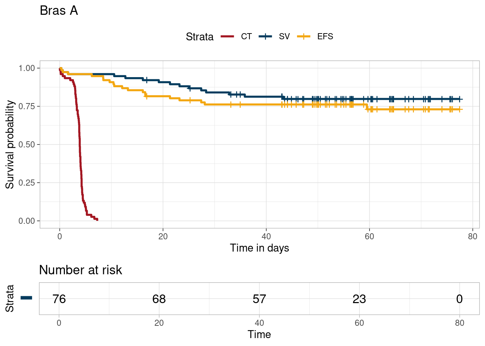
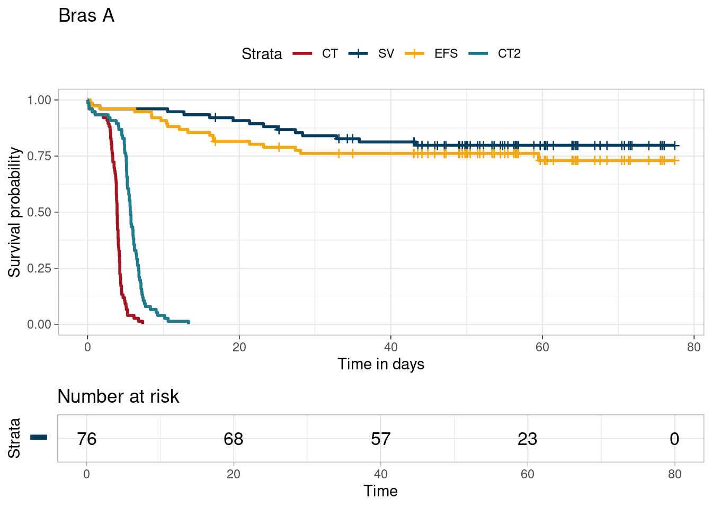
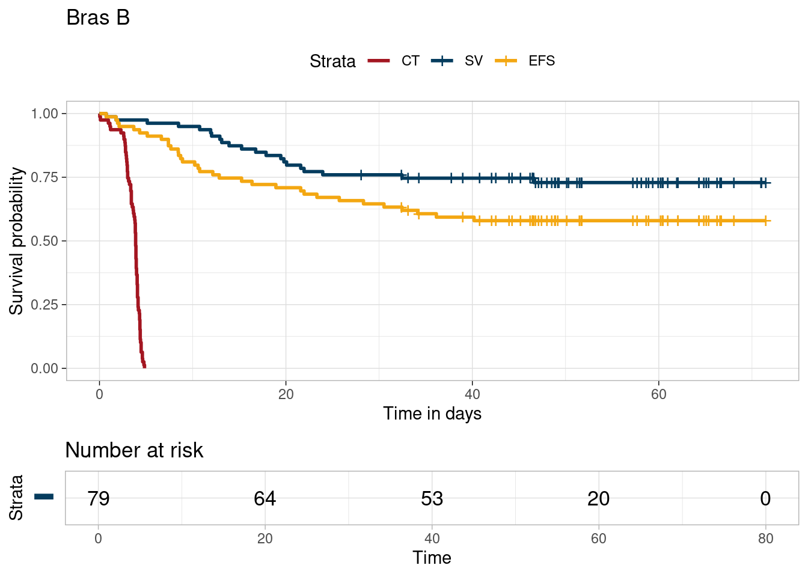
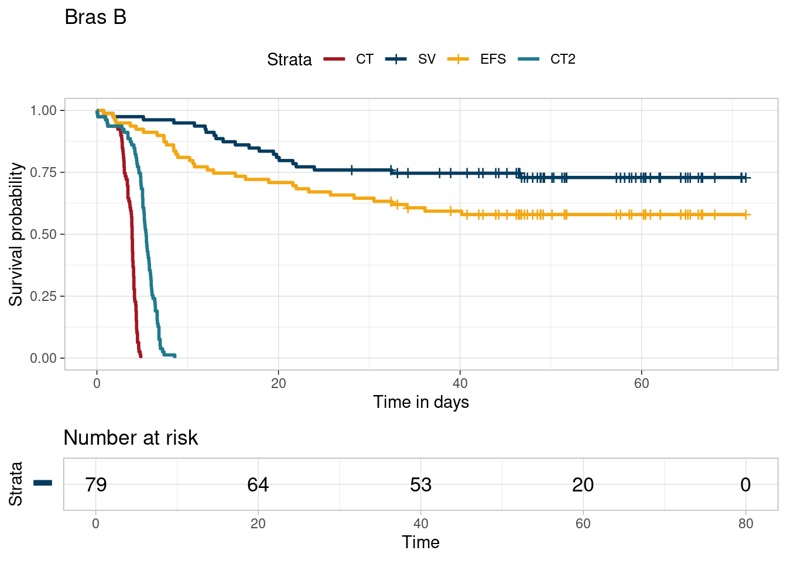

qaly$suivi <-as.numeric(qaly$Datemax-qaly$randodt)/(365.25/12)qaly$survie <-as.numeric(qaly$deathdt-qaly$randodt)/(365.25/12)qaly$delfinct <-as.numeric(qaly$finct.dt-qaly$randodt)/(365.25/12)qaly$delarr <-as.numeric(qaly$arrpremadt-qaly$randodt)/(365.25/12)qaly$delfinct[which(qaly$delfinct==0)]<- qaly$delarr[which(qaly$delfinct==0)]qaly$finct<-rep(1,length(qaly$delfinct))qaly$delrec<-as.numeric(qaly$relapsdt-qaly$randodt)/(365.25/12)qaly$delpfs<- qaly$suiviqaly$delpfs[!is.na(qaly$delrec)]<-qaly$delrec[!is.na(qaly$delrec)]qaly$delbmt <-as.numeric(qaly$bmtdt-qaly$randodt)/(365.25/12)qaly$delbmt1 <-as.numeric(qaly$cgvhdt-qaly$randodt)/(365.25/12)qaly$delbmt2 <-as.numeric(qaly$agvhdt-qaly$randodt)/(365.25/12)qaly$delfinct2 <- qaly$delfinctqaly$delfinct2[!is.na(qaly$delbmt)]<-pmax(qaly$delfinct[!is.na(qaly$delbmt)],qaly$delbmt[!is.na(qaly$delbmt)]) #add ,qaly$delbmt1[!is.na(qaly$delbmt1)],qaly$delbmt2[!is.na(qaly$delbmt2)]#It takes in account the complication ecountered after the transplant#finctqaly$finct2 <- qaly$finctqaly$finct2[!is.na(qaly$delbmt)]<-1
Compute the survival curves for each arm
library(survival)# Arm Act_A <-survfit(Surv(delfinct,finct)~1,data=qaly,subset = (R1 =="Intensive arm (A)")) # ct : Durée du traitementct2_A <-survfit(Surv(delfinct2,finct2)~1,data=qaly,subset = (R1 =="Intensive arm (A)")) #Durée du traitement avec complicationssv_A <-survfit(Surv(suivi,as.numeric(as.character(dc)))~1,data=qaly,subset = (R1 =="Intensive arm (A)")) # Durée de survie : Temps avant décèsefs_A <-survfit(Surv(delpfs,as.numeric(as.character(pfs)))~1, data=qaly,subset = (R1 =="Intensive arm (A)")) # Durée de survie sans progression : Temps avant rechute # Arm Bct_B <-survfit(Surv(delfinct,finct)~1,data=qaly,subset = (R1 =="Light arm (B)"))ct2_B <-survfit(Surv(delfinct2,finct2)~1,data=qaly,subset = (R1 =="Light arm (B)"))sv_B <-survfit(Surv(suivi,as.numeric(as.character(dc)))~1,data=qaly,subset = (R1 =="Light arm (B)"))efs_B <-survfit(Surv(delpfs,as.numeric(as.character(pfs)))~1, data=qaly,subset = (R1 =="Light arm (B)"))
Plot the survival curves for each arm
Bras A
#fig.width=6, fig.height=5.5 => use later for websitefit1<-list(CT = ct_A, CT2=ct2_A,SV=sv_A, EFS=efs_A)library(survminer)
Le chargement a nécessité le package : ggplot2
Le chargement a nécessité le package : ggpubr
Attachement du package : 'survminer'
L'objet suivant est masqué depuis 'package:survival':
myeloma
library(gridExtra)
Attachement du package : 'gridExtra'
L'objet suivant est masqué depuis 'package:dplyr':
combine
colors <-c("#A31621", "#053C5E", "#F3A712", "#1F7A8C", "#AFB3F7")t<-ggsurvplot_combine(fit1,risk.table =TRUE, # Add risk tablexlab ="Time in days", # customize X axis label.ggtheme =theme_light(), # customize plot and risk table with a therme.risk.table.y.text.col = T, # colour risk table text annotations.risk.table.y.text =FALSE,legend.labs =c("CT","CT2","SV","EFS"))
Warning: There was 1 warning in `mutate()`.
ℹ In argument: `survtable = purrr::map2(...)`.
Caused by warning:
! `select_()` was deprecated in dplyr 0.7.0.
ℹ Please use `select()` instead.
ℹ The deprecated feature was likely used in the survminer package.
Please report the issue at <https://github.com/kassambara/survminer/issues>.
Warning: Returning more (or less) than 1 row per `summarise()` group was deprecated in
dplyr 1.1.0.
ℹ Please use `reframe()` instead.
ℹ When switching from `summarise()` to `reframe()`, remember that `reframe()`
always returns an ungrouped data frame and adjust accordingly.
library(survminer)library(survival)library(gridExtra) # or library(patchwork)# Assuming ct, sv, and efs are survival objectsfit1 <-list(CT = ct_A, SV = sv_A, EFS = efs_A)# custom color palette for CT, SV, EFScolors <-c("#A31621", "#053C5E", "#F3A712", "#1F7A8C", "#AFB3F7")# Step 1: Generate the Combined Survival Plot without a risk tablesurv1_A <-ggsurvplot_combine(fit1,risk.table =FALSE, # Disable risk table herexlab ="Time in days",ggtheme =theme_light(),legend.labs =c("CT","SV","EFS"),palette=colors,title="Bras A")# Step 2: Generate a Separate Risk Table for "SV"# Note: This assumes 'sv' is a fit object from survival analysis.# If 'sv' is not directly usable, you might need to recreate the survival analysis for SV.sv_plot_A <-ggsurvplot(sv_A, risk.table =TRUE,ggtheme =theme_light(),# tables.theme = theme(# axis.text.x = element_blank(), # Hide x-axis text# axis.ticks.x = element_blank(), # Hide x-axis ticks# axis.title.x = element_blank() # Optionally, hide the x-axis title as well# ),risk.table.y.text.col =TRUE,risk.table.y.text =FALSE,palette = colors[2]) # Adjust 'colors[2]' as per your color setup# Step 3: Combine the Plot and the Risk Table Manually# Option 1: Using gridExtracombined_plot <-grid.arrange(surv1_A$plot, sv_plot_A$table, ncol =1,heights =c(6, 2))

# Or Option 2: Using patchwork (Uncomment to use)# combined_plot <- g$plot / sv_plot$table# Print or save the combined plotprint(combined_plot)
TableGrob (2 x 1) "arrange": 2 grobs
z cells name grob
1 1 (1-1,1-1) arrange gtable[layout]
2 2 (2-2,1-1) arrange gtable[layout]
Partition 2
library(survminer)library(survival)library(gridExtra) # or library(patchwork)# Assuming ct, sv, and efs are survival objectsfit2 <-list(CT = ct_A, SV = sv_A, EFS = efs_A, CT2 = ct2_A)# custom color palette for CT, SV, EFScolors <-c("#A31621", "#053C5E", "#F3A712", "#1F7A8C", "#AFB3F7")# Step 1: Generate the Combined Survival Plot without a risk tablesurv2_A <-ggsurvplot_combine(fit2,risk.table =FALSE, # Disable risk table herexlab ="Time in days",ggtheme =theme_light(),legend.labs =c("CT","SV","EFS","CT2"),palette=colors,title="Bras A")# Step 3: Combine the Plot and the Risk Table Manually# Option 1: Using gridExtracombined_plot <-grid.arrange(surv2_A$plot, sv_plot_A$table, ncol =1,heights =c(6, 2))

# Print or save the combined plotprint(combined_plot)
TableGrob (2 x 1) "arrange": 2 grobs
z cells name grob
1 1 (1-1,1-1) arrange gtable[layout]
2 2 (2-2,1-1) arrange gtable[layout]
# fit2<-list(CT = ct, CT2 = ct2, SV=sv, EFS=efs)# library(survminer)# t<-ggsurvplot_combine(fit,# risk.table = TRUE, # Add risk table# xlab = "Time in days", # customize X axis label.# ggtheme = theme_light(), # customize plot and risk table with a therme.# risk.table.y.text.col = T, # colour risk table text annotations.# risk.table.y.text = FALSE,# legend.labs = c("CT", "CT2","SV","EFS"))# t
Bras B
Partition 1
library(survminer)library(survival)library(gridExtra) # or library(patchwork)# Assuming ct, sv, and efs are survival objectsfit1 <-list(CT = ct_B, SV = sv_B, EFS = efs_B)# custom color palette for CT, SV, EFScolors <-c("#A31621", "#053C5E", "#F3A712", "#1F7A8C", "#AFB3F7")# Step 1: Generate the Combined Survival Plot without a risk tablesurv1_B <-ggsurvplot_combine(fit1,risk.table =FALSE, # Disable risk table herexlab ="Time in days",ggtheme =theme_light(),legend.labs =c("CT","SV","EFS"),palette=colors,title="Bras B")# Step 2: Generate a Separate Risk Table for "SV"# Note: This assumes 'sv' is a fit object from survival analysis.# If 'sv' is not directly usable, you might need to recreate the survival analysis for SV.sv_plot_B <-ggsurvplot(sv_B, risk.table =TRUE,ggtheme =theme_light(),# tables.theme = theme(# axis.text.x = element_blank(), # Hide x-axis text# axis.ticks.x = element_blank(), # Hide x-axis ticks# axis.title.x = element_blank() # Optionally, hide the x-axis title as well# ),risk.table.y.text.col =TRUE,risk.table.y.text =FALSE,palette = colors[2]) # Adjust 'colors[2]' as per your color setup# Step 3: Combine the Plot and the Risk Table Manually# Option 1: Using gridExtracombined_plot <-grid.arrange(surv1_B$plot, sv_plot_B$table, ncol =1,heights =c(6, 2))

# Or Option 2: Using patchwork (Uncomment to use)# combined_plot <- g$plot / sv_plot$table# Print or save the combined plotprint(combined_plot)
TableGrob (2 x 1) "arrange": 2 grobs
z cells name grob
1 1 (1-1,1-1) arrange gtable[layout]
2 2 (2-2,1-1) arrange gtable[layout]
Partition 2
library(survminer)library(survival)library(gridExtra) # or library(patchwork)# Assuming ct, sv, and efs are survival objectsfit2 <-list(CT = ct_B, SV = sv_B, EFS = efs_B, CT2 = ct2_B)# custom color palette for CT, SV, EFScolors <-c("#A31621", "#053C5E", "#F3A712", "#1F7A8C", "#AFB3F7")# Step 1: Generate the Combined Survival Plot without a risk tablesurv2_B <-ggsurvplot_combine(fit2,risk.table =FALSE, # Disable risk table herexlab ="Time in days",ggtheme =theme_light(),legend.labs =c("CT","SV","EFS","CT2"),palette=colors,title="Bras B")# Step 3: Combine the Plot and the Risk Table Manually# Option 1: Using gridExtracombined_plot <-grid.arrange(surv2_B$plot, sv_plot_B$table, ncol =1,heights =c(6, 2))

# Print or save the combined plotprint(combined_plot)
TableGrob (2 x 1) "arrange": 2 grobs
z cells name grob
1 1 (1-1,1-1) arrange gtable[layout]
2 2 (2-2,1-1) arrange gtable[layout]
RMST
Computing rmst for each arm
# Charger les packages nécessaireslibrary(survival)library(survRM2) # Assurez-vous que le package rmst2 est installé pour accéder à cette fonctionlibrary(boot)### 0 = Int arm A, 1 = Light arm Bt_censure <-60#min(64.3285421,60.9774127) # 20% de censure# For ct_rmstct_rmst<-rmst2(qaly$delfinct, qaly$finct, as.factor(as.numeric(qaly$R1)-1), covariates =NULL, alpha =0.05)ct_rmstB<-ct_rmst$RMST.arm1$rmst[1]ct_rmstA<-ct_rmst$RMST.arm0$rmst[1]# For ct2_rmstct2_rmst<-rmst2(qaly$delfinct2, qaly$finct2, as.factor(as.numeric(qaly$R1)-1), covariates =NULL, alpha =0.05)ct2_rmstB <- ct2_rmst$RMST.arm1$rmst[1] # Assuming arm1 corresponds to arm Bct2_rmstA <- ct2_rmst$RMST.arm0$rmst[1] # Assuming arm0 corresponds to arm A# For sv_rmstsv_rmst<-rmst2(qaly$suivi, as.numeric(as.character(qaly$dc)), as.factor(as.numeric(qaly$R1)-1), tau = t_censure, covariates =NULL, alpha =0.05)sv_rmstB <- sv_rmst$RMST.arm1$rmst[1]sv_rmstA <- sv_rmst$RMST.arm0$rmst[1]# For efs_rmstefs_rmst<-rmst2(qaly$delpfs, as.numeric(as.character(qaly$pfs)), as.factor(as.numeric(qaly$R1)-1), tau = t_censure, covariates =NULL, alpha =0.05)efs_rmstB <- efs_rmst$RMST.arm1$rmst[1]efs_rmstA <- efs_rmst$RMST.arm0$rmst[1]# Calculer TOX, TWiST, et REL en utilisant les RMST calculéstox1_A = ct_rmstAtox2_A = ct2_rmstAtwist1_A = efs_rmstA - ct_rmstAtwist2_A= efs_rmstA - ct2_rmstArel_A = sv_rmstA - efs_rmstA# Calculer TOX, TWiST, et REL en utilisant les RMST calculéstox1_B = ct_rmstBtox2_B = ct2_rmstBtwist1_B = efs_rmstB - ct_rmstBtwist2_B= efs_rmstB - ct2_rmstBrel_B = sv_rmstB - efs_rmstB
Threshold analysis for Q-TWIST diff with computed var-cov
resultsboot<-as.data.frame(bootstrap_results1$t) %>%select("V1", "V3", "V5", "V6", "V8", "V10","V11","V13","V15") %>%rename(toxA ="V1", twistA ="V3", relA ="V5", toxB ="V6", twistB ="V8", relB ="V10",toxDiff="V11", twistDiff="V13", relDiff="V15")# Attention, nous ne trouvons pas les mêmes var covariances pour les différences de qtwistvar(resultsboot$toxDiff)
# Filtrer les résultats où l'intervalle de confiance contient 0diff_null <- results %>%filter(Lower <=0, Upper >=0) # Tracer le graphique en utilisant uTOX sur l'axe x et QTWiST1_Diff sur l'axe y, et uREL en tant que couleurplot(diff_null$uTOX, diff_null$QTWiST1_Diff, pch =19, col ="red", xlab ="uTOX", ylab ="QTWiST1_Diff", main ="Confidence interval contains 0")# Ajouter uREL comme troisième axepoints(diff_null$QTWiST1_Diff, diff_null$uTOX, pch =19, col ="blue")# Légendelegend("bottomright", legend =c("QTWiST1_Diff", "uREL"), col =c("red", "blue"), pch =19)